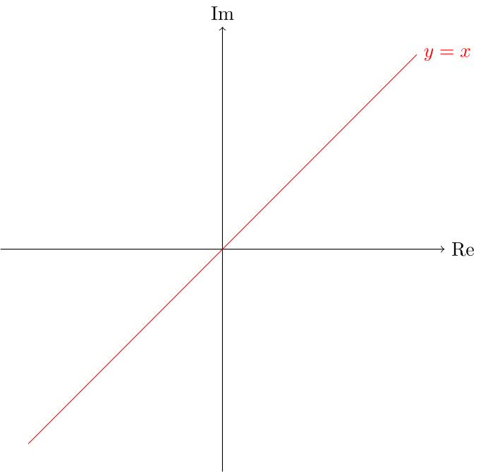
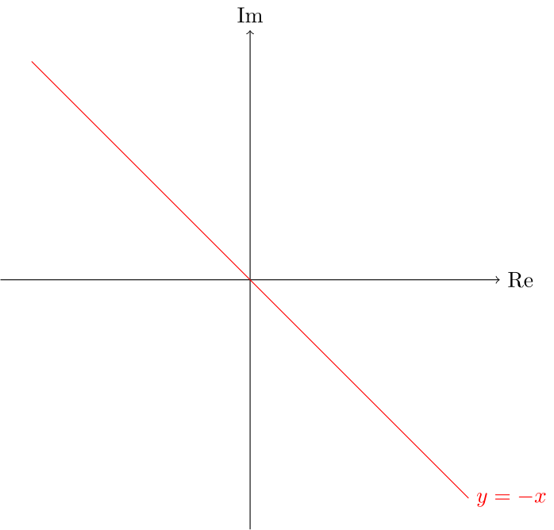
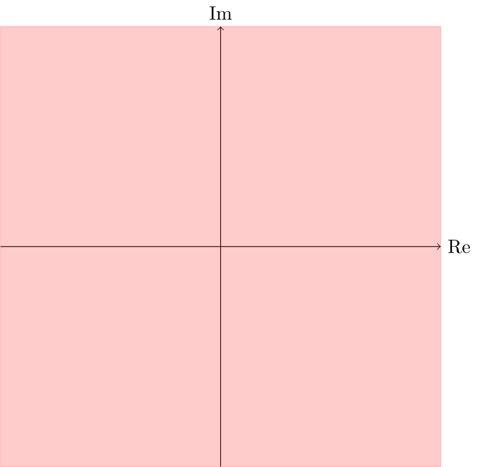
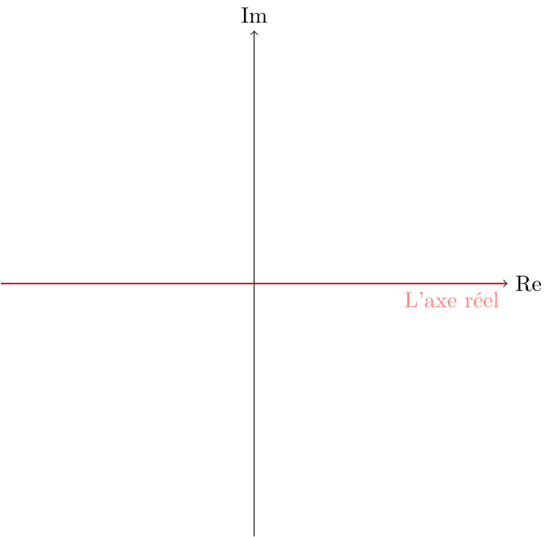
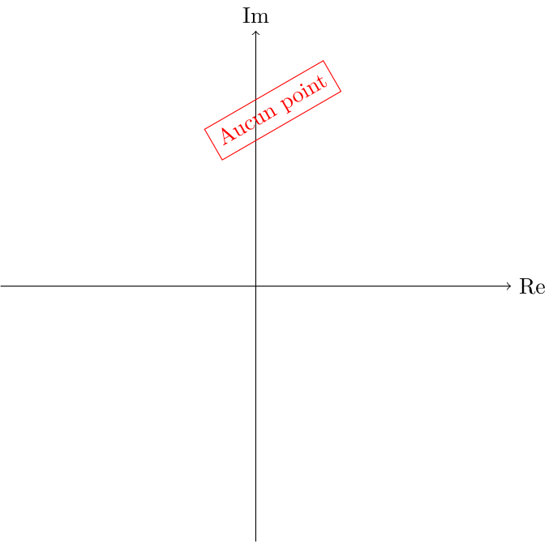
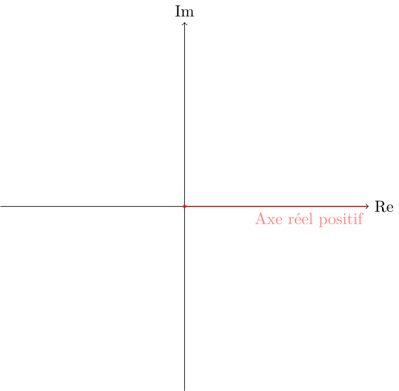
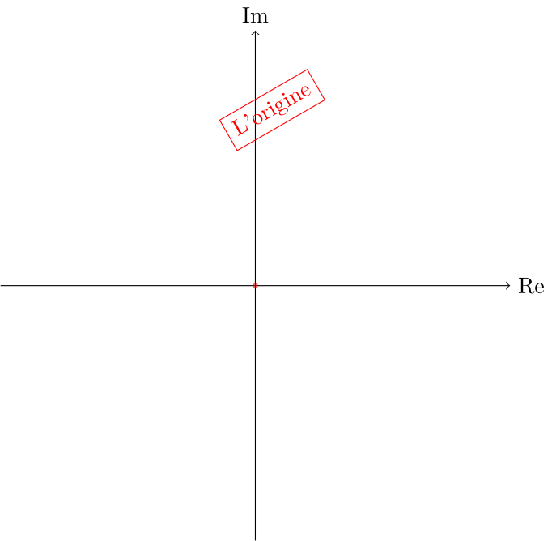
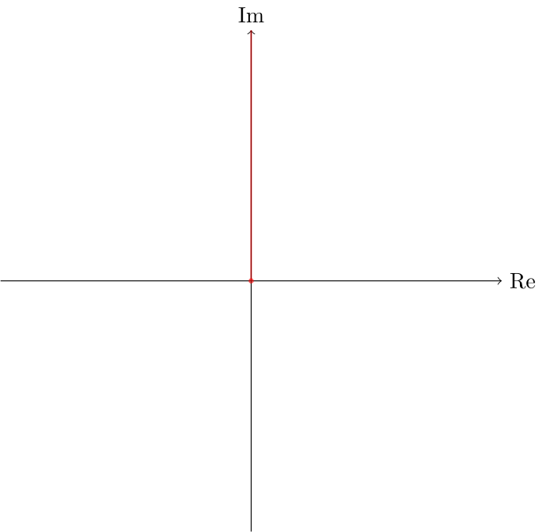

6 Série 1
Exercice 6.1
Soit \(z_1=2+\textrm{i}\) et \(z_2=3-4\textrm{i}\). Écrivez, sous forme cartésienne, chacun des nombres ci-dessous.
- \(z_1+z_2\)
- \(|z_1+z_2|\)
- \(\frac{z_1}{z_2}\)
- \(\frac{z_1}{z_1-z_2}\)
- \(z_1^2+z_2^2\)
- \(\left(z_1+\overline{z_1}\right)\left(z_2+\overline{z_2}\right)\)
- \(\frac{z_2^2-z_1^2}{z_1\overline{z_1}z_2\overline{z_2}}\)
- \((z_1-2)^{10}\)
- \(\frac{(2z_2-3z_1)^8}{(z_2+4z_1)^5}\)
- \(\left|\frac{z_1^2+z_2^3}{2z_2+8z_1}\right|\)
- \(5-3\textrm{i}\)
- \(\sqrt{34}\)
- \(\frac{2}{25}+\frac{11}{25}\textrm{i}\)
- \(\frac{3}{26}-\frac{11}{26}\textrm{i}\)
- \(-4-20\textrm{i}\)
- \(24\)
- \(-\frac{2}{25}-\frac{28}{125}\textrm{i}\)
- \(-1\)
- \(1331\)
- \(\frac{\sqrt{3649}}{11}\)
Exercice 6.2
Pour chacune des équations ci-dessous, trouvez les nombres complexes \(z\) qui la satisfont.
- \(\frac{z}{2-\textrm{i}}=7+5\textrm{i}\)
- \(z=(1+\textrm{i})^{10}\)
- \((2z+3)(5z-5+5\textrm{i})=0\)
- \(|z|=2\textrm{i}\)
- \(\frac{z}{2+\textrm{i}-z}=3+2\textrm{i}\)
- \(\overline{z}z=4\)
- \(z=1+\textrm{i}+\textrm{i}^2+\textrm{i}^3+\ldots+\textrm{i}^{999}\)
- \(-\frac{2\textrm{i}}{z}=\frac{z}{32\textrm{i}}\)
- \(\left|z^2-1\right|=z^2-1\)
- \((3z+4\textrm{i}z)(z-5\textrm{i})=0\)
- \(z=19+3\textrm{i}\)
- \(z=32\textrm{i}\)
- \(z=-\frac{3}{2}\) ou \(z=1-\textrm{i}\)
- Aucune valeur de \(z\) ne satisfait cette équation.
- \(z=\frac{3}{2}+\textrm{i}\)
- Tous les nombres complexes de module \(2\), soit tous ceux sur le cercle de rayon \(2\) centré à l’origine dans le plan complexe.
- \(z=0\)
- \(z=\pm 8\)
- On pose \(z=x+y\,\textrm{i}\) où \(x,y\in\mathbb{R}\). En remplaçant dans l’équation, on montre qu’on ne peut avoir \(y\neq 0\). Le nombre \(z\) doit être un réel \(x\). L’équation devient alors \(|x^2-1|=x^2-1\). Un nombre réel est égal à sa valeur absolue uniquement lorsqu’il s’agit d’un nombre réel positif. On doit donc avoir que \(x^2-1\in [0,\infty[\). Cela signifie que \(x^2\in [1,\infty[\), d’où \(x\in\mathbb{R}\,\backslash\,]-1,1[~=~]-\infty,-1]\cup[1,\infty[\).
- \(z=0\) ou \(z=5\textrm{i}\)
Exercice 6.3
Représentez chacun des ensembles suivants dans le plan complexe.
- \(\{z\in\mathbb{C}:z=x+x\textrm{i}, x\in\mathbb{R}\}\)
- \(\{z\in\mathbb{C}:\text{Re}\,(z)+\text{Im}\,(z)=0\}\)
- \(\{z\in\mathbb{C}:\text{Re}\,(z+\overline{z})\in\mathbb{R}\}\)
- \(\{z\in\mathbb{C}:\text{Im}\,(z+\overline{z})\in\mathbb{R}\}\)
- \(\{z\in\mathbb{C}:2z=\text{Re}\,(z+\overline{z})\}\)
- \(\{z\in\mathbb{C}:\text{Im}\,(z)+\text{Re}\,(z)\notin\mathbb{R}\}\)
- \(\{z\in\mathbb{C}:|z|=|\overline{z}|\}\)
- \(\{z\in\mathbb{C}:|z|+2=z+2\}\)
- \(\{z\in\mathbb{C}:|z+w|=|w|\,\forall w\in\mathbb{C}\}\)
- \(\{z\in\mathbb{C}:|z|=\text{Im}\,(z)\}\)
Soit \(z=x+\textrm{i}\, y\) un nombre complexe exprimé sous sa forme cartésienne, ce qui sous-entend que \(x\) et \(y\) sont des nombres réels. Pour chacune des sous-questions, nous devons trouver des conditions à imposer aux nombres \(x\) et \(y\) qui caractérisent l’appartenance du nombre complexe \(z=x+\textrm{i}\,y\) à l’ensemble de nombres précisé. Ces conditions doivent pouvoir nous permettre de facilement identifier les solutions.
- Puisque \(z=x+\textrm{i}\,y\), il faut et il suffit que \(x=y\). Ainsi, il s’agit des points du plan complexe appartenant à la droite d’équation \(y=x\).
 - Nous avons que \(\text{Re}\,(z)+\text{Im}\,(z)=x+y\). La condition revient donc à exiger que \(x+y=0\), c’est-à-dire que \(y=-x\). Les nombres appartenant à l’ensemble sont donc ceux situés sur la droite d’équation \(y=-x\).
 - On a que \(z+\overline{z}= 2x\). Comme \(x\in\mathbb{R}\), il en est de même de \(2x\). Nous avons donc que \(z+\overline{z}\in\mathbb{R}\,\forall z\in\mathbb{C}\), c’est-à-dire que \(\text{Re}\,(z+\overline{z})\in\mathbb{R}\,\forall z\in\mathbb{C}\). Ainsi, tous les points du plan complexe appartiennent à l’ensemble. Plus simplement, il suffit d’observer que par définition, la partie réelle d’un nombre complexe — comme la partie imaginaire — est toujours un nombre réel.
 - Par définition, la partie imaginaire d’un nombre complexe est un nombre réel. Par conséquent, tous les points du plan complexe appartiennent à cet ensemble.
- En posant \(z=x+\textrm{i}\, y\), l’équation devient \(2x+2y\,\textrm{i}=2x\). Cette équation se simplifie pour donner \(2y\,\textrm{i}=0\). Ainsi, les nombres appartenant à cet ensemble sont ceux dont la partie imaginaire est nulle. L’ensemble cherché est donc celui des nombres complexes situés sur l’axe réel.
 - Par définition, \(\text{Re}\,(z)\) et \(\text{Im}\,(z)\) sont des nombres réels. Leur somme est donc un nombre réel, quel que soit le nombre complexe \(z\). Par conséquent, aucun nombre du plan complexe n’appartiennent à l’ensemble.
 - Si \(z=x+\textrm{i}\,y\), alors \(\overline{z}=x-\textrm{i}\, y\). Ainsi, nous avons que \[|\overline{z}|=\sqrt{x^2+(-y)^2}=\sqrt{x^2+y^2}=|z|.\] Donc tous les nombres du plan complexe appartiennent à l’ensemble.
- D’abord, l’équation se simplifie pour donner \(|z|=z\). Le membre de gauche étant un nombre réel positif, les seuls nombres complexes à pouvoir vérifier cette équation sont donc les nombres réels dans l’intervalle \([0,\infty[\). Comme tous les nombres réels positifs sont égaux à leur module, on peut affirmer qu’un nombre appartient à l’ensemble si et seulement si c’est un nombre dans l’intervalle \([0,\infty[\).
 - Si \(|z+w|=|w|\) pour tout \(w\in\mathbb{C}\), alors en particulier \(|z+w|=|w|\) lorsque \(w=0\). Cela signifie que \(|z+0|=|0|=0\), d’où \(z=0\). Nous venons donc de montrer que si un nombre complexe \(z\) appartient à l’ensemble, alors il est forcément égal à \(0\). Cela ne montre pas que 0 appartient à l’ensemble. Pour compléter, on vérifie que si \(z=0\), la condition s’écrit \(|0+w|=|w|\) pour tout \(w\in\mathbb{C}\). Comme cette condition est vérifiée, le seul nombre complexe qui appartient à l’ensemble est \(0\).
 - L’équation entraîne que \(\sqrt{x^2+y^2}=y\). Comme le membre de gauche de l’équation est une nombre réel positif, il doit en être de même du membre de droite. En élevant au carré de chaque côté, on obtient que \(x^2+y^2=y^2\), d’où \(x=0\). Les seuls candidats possibles sont donc les nombres complexes ayant une partie réelle nulle et une partie imaginaire positive. On vérifie que si \(z=y\,\textrm{i}\) où \(y\in[0,\infty[\), alors l’équation est satisfaite. Ainsi, les nombres situés sur l’axe imaginaire au-dessus de l’axe réel (y compris l’origine) sont les seuls à appartenir à l’ensemble.

Exercice 6.4
Montrez chacune des propriétés ci-dessous. Dans tous les cas, \(z,z_1\) et \(z_2\) sont des nombres complexes et \(n\in\mathbb{N}^{\star}.\)
- \(\text{Re}\,(z)\leq|z|\)
- \(\text{Im}\,(z)\leq|z|\)
- \(|z_1\cdot z_2|=|z_1|\cdot |z_2|\)
- \(|z^n|=|z|^n\)
- \(\left|\frac{z_1}{z_2}\right|=\frac{|z_1|}{|z_2|}\qquad(\,z_2\neq 0)\)
- \(\overline{z_1+z_2}=\overline{z_1}+\overline{z_2}\)
- \(\overline{z_1\cdot z_2}=\overline{z_1}\cdot \overline{z_2}\)
- \(\overline{z^n}=\overline{z}^{\,n}\)
- \(\overline{\left(\dfrac{z_1}{z_2}\right)}=\dfrac{\overline{z_1}}{\overline{z_2}}\qquad(\,z_2\neq 0)\)
Dans ce qui suit, nous supposerons que \(z=x+\textrm{i}y,z_1=x_1+\textrm{i}\,y_1\) et \(z_2=x_2+\textrm{i}\, y_2\), où \(x,x_1,x_2,y,y_1\) et \(y_2\) sont des nombres réels.
Nous avons que \(|z|=\sqrt{x^2+y^2}\geq \sqrt{x^2}=|x|\geq x=\text{Re}\,(z)\).
Nous avons que \(|z|=\sqrt{x^2+y^2}\geq \sqrt{y^2}=|y|\geq y=\text{Im}\,(z)\).
Nous avons que \[\begin{align*}|z_1\cdot z_2|&=&|(x_1+\textrm{i}\, y_1)\cdot (x_2+\textrm{i}\, y_2)|\\ &=&|x_1x_2-y_1y_2+\textrm{i}\,(x_1y_2+y_1x_2)|\\ &=&\sqrt{x_1^2x_2^2+y_1^2y_2^2+x_1^2y_2^2+y_1^2x_2^2}. \end{align*}\] De même, \[|z_1|\cdot |z_2|=\sqrt{x_1^2+y_1^2}\cdot\sqrt{x_2^2+y_2^2}=\sqrt{x_1^2x_2^2+y_1^2y_2^2+x_1^2y_2^2+y_1^2x_2^2}.\] La propriété est donc établie.
Il suffit d’appliquer la propriété (c) plusieurs fois : \[\begin{align*} \left|z^{n}\right|&=\left|z^{n-1}\cdot z\right|\\ &=\left|z^{n-1}\right|\cdot |z| \qquad \text{d'après la propriété (c)}\\ &=\left|z^{n-2}\cdot z\right|\cdot |z|\\ &=\left|z^{n-2}\right|\cdot |z|\cdot |z| \qquad \text{d'après la propriété (c)}\\ &=\ldots\\ &=\underbrace{|z|\cdot|z|\cdots|z|}_{n\text{~fois}}\qquad \text{après avoir appliqué (c) suffisament de fois}\\ &=|z|^n. \end{align*}\]
Pour \(z_2\neq 0\), nous avons que \[\begin{align*} |z_1|&=\left|z_2\cdot\frac{z_1}{z_2}\right|\\ &=|z_2|\cdot\left|\,\frac{z_1}{z_2}\,\right|\qquad\text{d'après la propriété (c).} \end{align*}\] En divisant chaque membre de l’équation par \(|z_2|\) — ce qu’on peut faire, puisque \(z_2\neq 0\) — on complète la démonstration.
Nous avons que \[\begin{align*} \overline{z_1+z_2}&=\overline{x_1+x_2+\textrm{i}\,(y_1+y_2)}\\ &=x_1+x_2-\textrm{i}\,(y_1+y_2)\\ &=x_1-\textrm{i}\,y_1+x_2-\textrm{i}\,y_2\\ &=\overline{z_1}+\overline{z_2}. \end{align*}\]
Nous avons que \[\begin{align*} \overline{z_1\cdot z_2}&=\overline{(x_1+\textrm{i}\,y_1)\cdot(x_2+\textrm{i}\,y_2)}\\ &=\overline{x_1x_2-y_1y_2+\textrm{i}\,(x_1y_2+x_2y_1)}\\ &=x_1x_2-y_1y_2-\textrm{i}\,(x_1y_2+x_2y_1). \end{align*}\] De même, \[\begin{align*} \overline{z_1}\cdot\overline{z_2}&=(x_1-\textrm{i}\,y_1)\cdot(x_2-\textrm{i}\,y_2)\\ &=x_1x_2-y_1y_2-\textrm{i}\,(x_1y_2+x_2y_1). \end{align*}\] La propriété est donc démontrée.
Nous avons que \[\begin{align*} \overline{z^{n}}&=\overline{z^{n-1}\cdot z}\\ &=\overline{z^{n-1}}\cdot \overline{z}\qquad \text{d'après la propriété (g)}\\ &=\overline{z^{n-2}\cdot z}\cdot \overline{z}\qquad \text{d'après la propriété (g)}\\ &=\overline{z^{n-2}}\cdot\overline{z}\cdot \overline{z}\qquad \text{d'après la propriété (g)}\\ &=\ldots\\ &=\underbrace{\overline{z}\cdot \overline{z}\cdot\ldots\cdot\overline{z}}_{n\text{~fois}} \qquad \text{en appliquant (g) suffisament de fois}\\ &=\overline{z}^{\,n}\,. \end{align*}\]
Pour \(z_2\neq 0\), nous avons que \[\begin{align*} \overline{z_1}&=\overline{z_2\cdot\frac{z_1}{z_2}}\\ &=\overline{z_2}\cdot\overline{\left(\frac{z_1}{z_2}\right)}\qquad\text{d'après la propriété (g).} \end{align*}\] En divisant chaque membre de l’équation par \(\overline{z_2}\) — ce qu’on peut faire, puisque \(z_2\neq 0\) — on complète la démonstration.
Exercice 6.5
Soit les nombres complexes \(z_1=-4+\textrm{i}\), \(z_2=3+8\,\textrm{i}\) et \(z_3=20+24\,\textrm{i}\).
- Trouvez l’équation de la droite passant par les points \(z_1\) et \(z_2\).
- Est-ce que les nombres complexes \(z_1, z_2\) et \(z_3\) sont alignés? Justifiez.
Il suffit de trouver l’équation d’une droite passant par les points de coordonnées \((-4,1)\) et \((3,8)\). Dans un premier temps, on trouve que la pente de la droite est de \(1\). Puis, en posant \(y=x+b\), on trouve que \(b=5\), d’où \(y=x+5\).
Pour que les trois points soient alignés, il faut et il suffit que \(z_3\) appartienne à la droite passant par les points \(z_1\) et \(z_2\). Ainsi, l’équation \(y=x+5\) doit être satisfaite lorsque \(x=20\) et \(y=24\). Comme ce n’est pas le cas, les trois points ne sont pas alignés.
Exercice 6.6
Trouvez les nombres complexes \(z\) qui satisfont simultanément les deux conditions suivantes: \[\begin{align} |z-3-3\textrm{i}|&=2,\\ z(1-\textrm{i})&=\overline{z}(1+\textrm{i}). \end{align}\]
Exercice 6.7
Pour chacune des équations ci-dessous, représentez, dans le plan complexe, les nombres complexes \(z\) qui la satisfont.
- \((2\textrm{i}+1)z+(2\textrm{i}-1)\overline{z}=20\textrm{i}\)
- \(|z|=z\)
- \(|z-1|+|z+1|=4\)
- \(|z-1|+|z+1|=2\)
- \(|z-1-\textrm{i}|+|z+1+\textrm{i}|=10\)
- \(|z-3|-|z+5|=\pm 2\)
- \(|z-3|-|z+5|=2\)
- \(|z-3|-|z+5|= \pm 8\)
- \(|z-2|-|z+2|=0\)
- \(|z-2|z\overline{z}=0\)
- \(z+3\overline{z}+8-4\textrm{i}=7+12\textrm{i}\)
- \(4\left(z-\overline{z}\right)=2\textrm{i}\left(z^2+2|z|^2+\overline{z}^2\right)\)
- On pose \(z=x+\textrm{i}\,y\). En égalant les parties réelle et imaginaire pour chacun des deux membres de l’équation, on trouve que \(y=10-2x\).
- Il s’agit des nombres réels positifs.
- Une ellipse de foyers \(1+\textrm{i}\) et \(-1-\textrm{i}\) centrée à l’origine de grand axe \(10\) et de petit axe \(2\sqrt{23}\).
- L’équation est équivalente à \(|z-2|=|z+2|\). Les points doivent être à une même distance de \(2\) et de \(-2\). Ce sont les points situés sur la droite perpendiculaire au segment qui les joint et qui passe par le milieu de celui-ci (la médiatrice du segment). Dans ce cas particulier, cela correspond à l’axe imaginaire.
- Pour que le produit \(|z-2|z\overline{z}\) soit nul, il faut qu’au moins un des facteurs soit nul. Le facteur \(|z-2|\) s’annule si et seulement si \(z=2\). De même, \(\overline{z}=0\iff z=0\). Ainsi, les seules solutions sont \(0\) et \(2\).
- En posant \(z=x+\textrm{i}\,y, x,y\in\mathbb{R}\), on trouve que \(z=-\frac{1}{4}-8\textrm{i}\).
- En posant \(z=x+\textrm{i}\,y, x,y\in\mathbb{R}\), on trouve que \(y=x^2\). Ainsi, l’ensemble solution est composé de tous les \(z\in\mathbb{C}\) pour lesquels ont peut trouver un \(x\in\mathbb{R}\) tel que \(z=x+x^2\,\textrm{i}\).